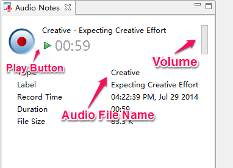
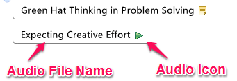

Audio Notes
Audio Notes can help to capture spoken information during meetings, brainstorming sessions, or other activities, and enables us to annotate topics without typing. We can easily record, play, and edit existing audio files.
To Record an Audio File:- Select the topic to which we want to add an audio note.
- Two methods to start recording:
- Click the audio icon on the toolbar
- Choose "Insert - Audio Notes" on the menu
- Click the record button on the topic again to stop recording.

Note: All record notes will be displayed as the subtopics of selected topics.

To Play Audio Notes:- Select the Audio notes topic.
- Click the audio notes icon on the topic directly.
- Select the Audio Notes Topic.
- Double click topic to edit the description content;
- Drag and move to the position where you want it.
Notes: This feature does not perform well on Linux at present.